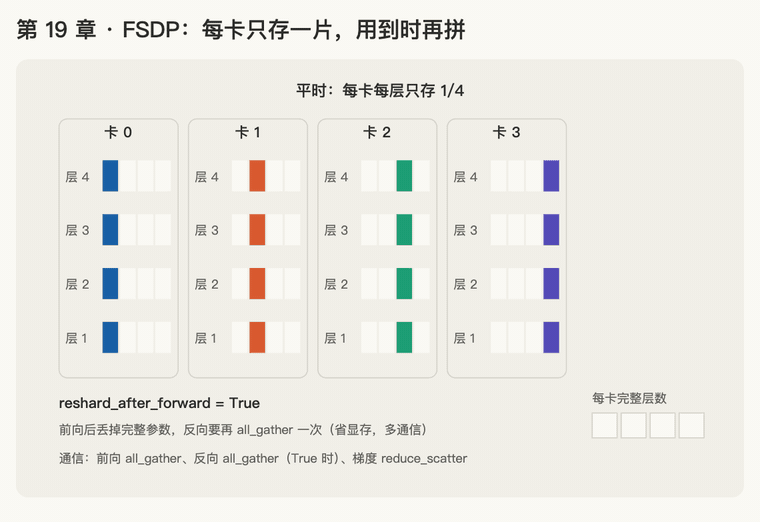

第 19 章 · FSDP2：每卡只存一片，用到时再拼
本地运行
git clone https://github.com/wikieden/pytorch-inside-out
cd pytorch-inside-out/code/notebooks
pip install jupyterlab torch numpy
jupyter lab ch19_fsdp2.ipynb也可以下载后直接用 VS Code 打开 .ipynb 运行。需要 GPU 的章节在 Colab 里选「代码执行程序 → 更改运行时类型 → GPU」。
本章回答：DDP 每卡存一整份模型，显存哪里浪费了？ZeRO 1 / 2 / 3 分别切掉了什么、各省多少？FSDP2 的
fully_shard在前向反向里什么时候收集参数、什么时候丢？reshard_after_forward、混合精度策略、HSDP 怎么选？
讲解日期：2026-11-14 · 上一章：第 18 章 DDP · 下一章：第 20 章 DTensor 与 TP
对应原文：Ultra-Scale Playbook §ZeRO（ultrascale-playbook.md第 794–1031 行：Memory usage revisited 第 826 行、显存公式第 840–852 行、ZeRO-1 第 857 行、ZeRO-2 第 921 行、ZeRO-3 第 953 行）；官方文档torch.distributed.fsdp.fully_shard（2.14 版已核对，〔在线〕）；多机报告 §2.1；本章输出在本机 Gloo 2 进程上跑过本章缩写：ZeRO = Zero Redundancy Optimizer（零 / 冗余 / 优化器）；FSDP = Fully Sharded Data Parallel（完全 / 分片 / 数据并行）；HSDP = Hybrid Sharded Data Parallel（混合 / 分片 / 数据并行）；Ψ（读"普赛"）= 参数个数；\(N_d\) = 数据并行的卡数（d = data）；全部缩写见 附录 · 缩写与术语表
讲解
第一步：DDP 的显存账——三样东西各存 N 份（2026-11-14）
混合精度 + AdamW 训练时，每个参数在显存里占（Playbook 第 840 行）：
| 东西 | 精度 | 每参数字节 |
|---|---|---|
| 参数（拿来计算的） | bf16 | 2 |
| 梯度 | bf16 | 2 |
| fp32 主参数 + AdamW 的 m、v | fp32 × 3 | 12 |
| 合计 | 16 |
公式写成 \(2\Psi + 2\Psi + 12\Psi = 16\Psi\)。
数字演示：7B 模型，\(16 \times 7 \times 10^9 = 112\) GB。一张 80 GB 的卡装不下，还没算激活（第 27 章）。DDP 下 8 张卡每张都存 112 GB，一共存了 8 份一模一样的东西。
类比：8 个人合租，每人都买了一整套百科全书。 其实一人存一卷，谁要查哪卷就借来看，看完还回去就够了。
一句话：混合精度 AdamW 每参数 16 字节，DDP 每卡都存全套，8 卡就是 8 份冗余。
第二步：ZeRO 三级——切得越多省得越多（2026-11-14）
ZeRO：把这三样东西沿数据并行的 \(N_d\) 张卡切开，每卡只存 \(\frac{1}{N_d}\)。
| 级别 | 切什么 | 每卡显存（Playbook 公式） | 7B、8 卡 |
|---|---|---|---|
| DDP | 不切 | \(16\Psi\) | 112 GB |
| ZeRO-1 | 优化器状态 | \(4\Psi + \frac{12\Psi}{N_d}\) | 28 + 10.5 = 38.5 GB |
| ZeRO-2 | + 梯度 | \(2\Psi + \frac{14\Psi}{N_d}\) | 14 + 12.25 = 26.25 GB |
| ZeRO-3（= FSDP） | + 参数 | \(\frac{16\Psi}{N_d}\) | 14 GB |
为什么能切优化器状态？第 17 章说过 all_reduce = reduce_scatter + all_gather。ZeRO 在中间插一刀：
- reduce_scatter 梯度：每卡只拿到自己那一段的完整梯度；
- 每卡只更新自己那一段参数（只需要那一段的 m、v）；
- all_gather 参数：把更新好的各段拼回来。
通信量和 DDP 一样（reduce_scatter + all_gather = all_reduce），显存却省了。ZeRO-3 更进一步，连参数平时也只存一段，用到时再拼，通信变成约 \(3\Psi\)（Playbook 第 980–990 行：前向 all_gather、反向再 all_gather、梯度 reduce_scatter）。
激活不能切：每卡吃的数据不同，激活本来就不重复（Playbook 第 823 行）。
一句话：ZeRO-1 切优化器、ZeRO-2 再切梯度、ZeRO-3 连参数也切；ZeRO-3 每卡 16Ψ / N，通信从 2Ψ 变 3Ψ。
第三步：FSDP2 的一层是怎么跑的（2026-11-14）
PyTorch 的 ZeRO-3 实现叫 FSDP，新版 API 叫 FSDP2（fully_shard）。
from torch.distributed.fsdp import fully_shard, MixedPrecisionPolicy
mesh = init_device_mesh("cuda", (world_size,))
for block in model.layers:
fully_shard(block, mesh=mesh) # 先套每一层（从下往上）
fully_shard(model, mesh=mesh) # 再套根，剩下的 embedding、输出层归根管
opt = torch.optim.AdamW(model.parameters()) # 一定在 fully_shard 之后建
实测（2 进程）：一个 nn.Linear(4, 6) 被 fully_shard 之后，
[rank 0] param type DTensor global (6, 4) local (3, 4) (Shard(dim=0),)
[rank 1] param type DTensor global (6, 4) local (3, 4) (Shard(dim=0),)
参数变成了 DTensor（分布式张量，第 20 章），全局形状还是 (6, 4)，每卡只存第 0 维切开后的 3 行。
一层的生命周期（每个被 fully_shard 的模块是一个"单元"）：
| 时刻 | 动作 |
|---|---|
| 这层前向开始前 | all_gather：各卡把自己那 3 行拼成完整的 (6, 4) |
| 前向算完 | reshard_after_forward=True 时丢掉拼好的完整参数，只留自己那片 |
| 这层反向开始前 | 再 all_gather 一次 |
| 反向算完 | 丢掉完整参数；梯度 reduce_scatter，每卡只留自己那片的梯度 |
opt.step() |
每卡只更新自己那片（优化器状态也只有那片） |
所以同一时刻只有一两层是完整的，峰值显存 ≈ 自己那 \(\frac{1}{N}\) 份 + 正在算的层。FSDP2 还会预取：算第 n 层时就开始 all_gather 第 n + 1 层，把通信藏起来（Playbook 第 992–998 行 prefetching）。
为什么要按层套：套在哪一层，那一层就是一次 all_gather 的单位。只套根模块的话，整个模型是一个单元，前向开始时要拼出整个模型，显存一点没省。
一句话：fully_shard 把参数变成按第 0 维切开的 DTensor；每层用前 all_gather、用完丢掉，反向后 reduce_scatter 梯度；要从下往上逐层套。
第四步：三个开关（2026-11-14）
reshard_after_forward：前向后丢不丢完整参数。
| 取值 | 前向后 | 反向时 | 适合 |
|---|---|---|---|
True（非根模块默认） |
丢掉 | 要再 all_gather 一次 | 显存紧 |
False（根模块默认） |
留着 | 不用再拼 | 显存够、想省通信（≈ ZeRO-2） |
| 整数，如 8 | 只在机内 8 卡间保留一份 | 反向时只在机内拼 | 折中 |
MixedPrecisionPolicy：
mp = MixedPrecisionPolicy(param_dtype=torch.bfloat16, reduce_dtype=torch.float32)
fully_shard(block, mesh=mesh, mp_policy=mp)
分片存的是 fp32；all_gather 时转成 bf16 拿去算（通信量减半）；梯度 reduce_scatter 用 fp32（求和精度高，第 13 章）。和 autocast 不同，它在模块边界转换，不是每个算子都转。
HSDP（混合分片）：多机时，跨机网络比机内慢得多。给一个 2D mesh：
mesh = init_device_mesh("cuda", (num_nodes, gpus_per_node), mesh_dim_names=("replicate", "shard"))
fully_shard(block, mesh=mesh)
机内 8 卡之间做 FSDP 切分（频繁的 all_gather 走 NVLink），机与机之间像 DDP 一样每台存一份、只 all_reduce 梯度（跨机流量少）。
一句话：reshard_after_forward 用显存换通信；mp_policy 用 bf16 算和传、fp32 存和求和；多机用 2D mesh 做 HSDP，机内切、机间复制。
动画演示：FSDP 的一次前向反向

可交互版：animations/19-fsdp-lifecycle.html。开关：reshard_after_forward = True / False。
怎么看：
- 4 张卡、模型 4 层；每层参数切成 4 片，每卡平时只有自己颜色那一片；
- 前向走到第 n 层：all_gather 把 4 片拼完整（这一层亮起），算完丢掉（True 时）；
- 反向从第 4 层往回：再拼、算、丢，同时 reduce_scatter 梯度；
- 右边显存柱实时显示"每卡此刻存了几层完整参数"；切到 False，前向后完整参数都留着，显存高但反向不用再拼。
练习与作答记录
题 1：13B 参数，混合精度 AdamW，16 卡。DDP、ZeRO-1、ZeRO-3 每卡各要多少 GB 存参数、梯度和优化器状态？
作答：（待作答）
题 2：同事只写了 fully_shard(model)（只套根模块），发现显存几乎没省。为什么？
作答：（待作答）
题 3：reshard_after_forward=False 比 True 每步少了哪一次通信？代价是什么？
作答：（待作答）
口诀
混合精度每参十六字节，DDP 人人一整套；
ZeRO 一切优化器、二再切梯度、三连参数也切，三级每卡十六 Ψ 除以 N；
层前拼、用完丢、反向后梯度 reduce_scatter；从下往上逐层套，机内切、机间复制叫 HSDP。
本章复习卡片
- P64（显存账 2Ψ + 2Ψ + 12Ψ = 16Ψ；7B → 112 GB）
- P65（ZeRO-1 / 2 / 3 公式：4Ψ + 12Ψ/N、2Ψ + 14Ψ/N、16Ψ/N；ZeRO-3 通信 3Ψ）
- P66（FSDP2 一层的生命周期：all_gather → 算 → 丢 → 反向再拼 → reduce_scatter；必须逐层套；实测 (6, 4) → 每卡 (3, 4) Shard(0)）
- P67（reshard_after_forward、MixedPrecisionPolicy、HSDP 2D mesh）
附录 · 延伸阅读
推荐阅读
| 读什么 | 读哪里 | 读它为了什么 |
|---|---|---|
| ★ Ultra-Scale Playbook §ZeRO | ultrascale-playbook.md 第 794–1031 行 |
三级 ZeRO 的显存公式和通信分析，每级一张图 |
★ 官方文档 fully_shard |
全文（〔在线〕docs.pytorch.org/docs/2.14/distributed.fsdp.fully_shard.html） | 每个参数的确切含义 |
| 官方教程「Getting Started with FSDP2」 | 全文（〔在线〕） | 完整训练脚本，含 meta 设备初始化和 DCP 保存 |
| Rajbhandari et al. 2019「ZeRO」 | §5 三级划分（〔在线〕arXiv:1910.02054） | ZeRO 原始论文 |
| Zhao et al. 2023「PyTorch FSDP」 | §3–4（〔在线〕arXiv:2304.11277） | FSDP1 的设计；FSDP2 改成按参数切的 DTensor |
| Ultra-Scale Playbook §A3 | ultrascale-playbook.md 第 3812 行起「ZeRO-3 (FSDP) Communication Analysis」 |
预取能否藏住通信的算式 |
数学原理
- 每卡显存：DDP \(16\Psi\)；ZeRO-1 \(4\Psi + \frac{12\Psi}{N_d}\)；ZeRO-2 \(2\Psi + \frac{14\Psi}{N_d}\)；ZeRO-3 \(\frac{16\Psi}{N_d}\)。
- 通信量（每卡、每步、按元素数）：DDP / ZeRO-1 / ZeRO-2 约 \(2\Psi\)；ZeRO-3 约 \(3\Psi\)。
- 峰值显存（ZeRO-3）≈ \(\frac{16\Psi}{N_d}\) + 正在使用的 1–2 层完整 bf16 参数 + 激活。
公式清单
| 写法 | 意思 |
|---|---|
fully_shard(module, mesh, reshard_after_forward, mp_policy) |
套 FSDP2 |
MixedPrecisionPolicy(param_dtype=bf16, reduce_dtype=fp32) |
算和传 bf16，求和 fp32 |
init_device_mesh("cuda", (nodes, gpus), mesh_dim_names=...) |
HSDP 的 2D mesh |
param.to_local() / param.placements |
看自己那片 / 怎么切的 |
代码对照：把本章的数字用代码算一遍
用 torch 把讲义里的数字跑一遍。分布式各章用
dist_util.run在本机起 2 个 Gloo 进程（Mac 上自动设好GLOO_SOCKET_IFNAME=lo0，第 16 章的坑），不需要 GPU。代码在仓库本地pytorch-deep-dive/solutions/chapter-code/ch19_fsdp2.py，配套测试tests/test_ch16_22.py；同一章的 notebook：notebooks/ch19_fsdp2.ipynb（讲解和代码放在一起，一格一格边读边跑）。Mac 上直接能跑，不需要 GPU：
bash cd pytorch-deep-dive/solutions/chapter-code uv run python ch19_fsdp2.py # 一步一步打印 uv run pytest tests/test_ch16_22.py
讲义 ↔ 代码：
| 讲义 | 公式 / 说法 | 写法 | 跑出来 |
|---|---|---|---|
| 第一、二步 显存账 | 16Ψ 与三级 ZeRO | zero_memory_gb(7e9, 8) |
112 / 38.5 / 26.25 / 14 GB |
| 第三步 fully_shard | Shard(0) 的 DTensor | shard_demo |
全局 (6, 4)，每卡 (3, 4) |
关键几行：
mesh = init_device_mesh("cpu", (world,))
for layer in m: fully_shard(layer, mesh=mesh) # 先逐层
fully_shard(m, mesh=mesh) # 再根
p.to_local().shape, p.placements # (3, 4), (Shard(dim=0),)
代码里才看得到的 2 件事：
- FSDP2 在 CPU + Gloo 上也能跑：所以本机能看到参数被切开的样子，只是没有加速。
- 梯度也是 DTensor：
grad.to_local()也是 (3, 4)，每卡只存自己那片的梯度。
自己改一改（不影响练习答案）：
- 把
nn.Linear(4, 6)改成nn.Linear(4, 5)，看不能整除时每卡分到几行。 zero_memory_gb(70e9, 64)算 70B 64 卡。